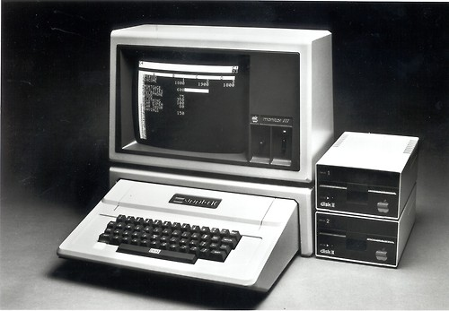
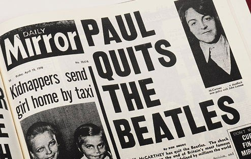
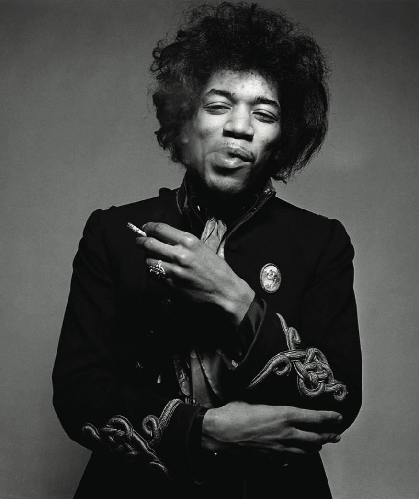

Este periodo abarca desde 1970 hasta 1980. Pero en 10 años pueden pasar muchas cosas a parte de la música, como la revolución tecnológica, el final de la guerra de Vietnam, la moda…
 La música de los 70 empezó cuando Jimi Hendrix y Janis Joplin, dos de los más grandes músicos de los 60 murieron de sobredosis a la edad de 27 años, dando el comienzo la música de los 70.
La música de los 70 es característica por pasar de un género hippie y psicodélico de los 60 al rock sinfónico de los 70, que se encuentra dentro del rock progresista y busca nuevos caminos musicales gracias a la combinación de la música docta, el hard rock y la psicodelia.
Para saber más de la música de los 70 pincha aquí